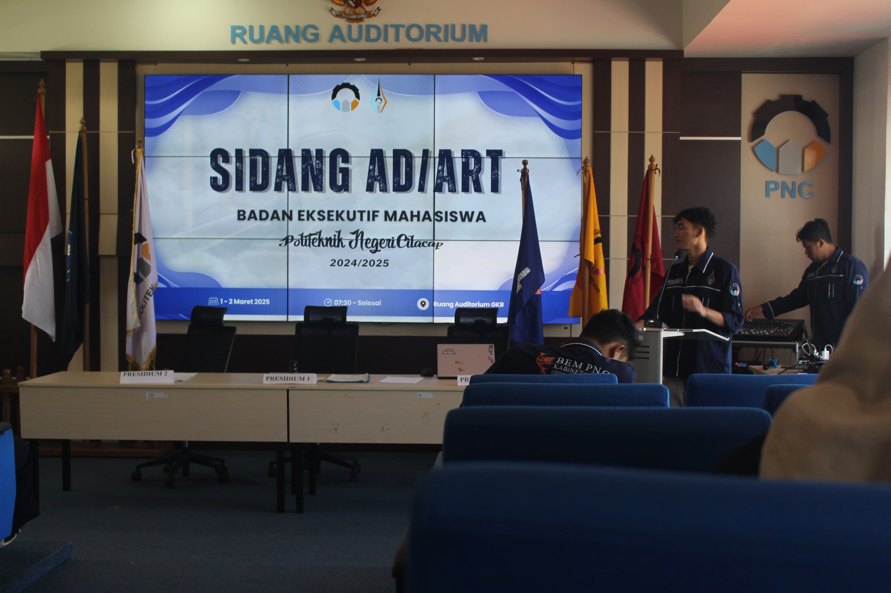
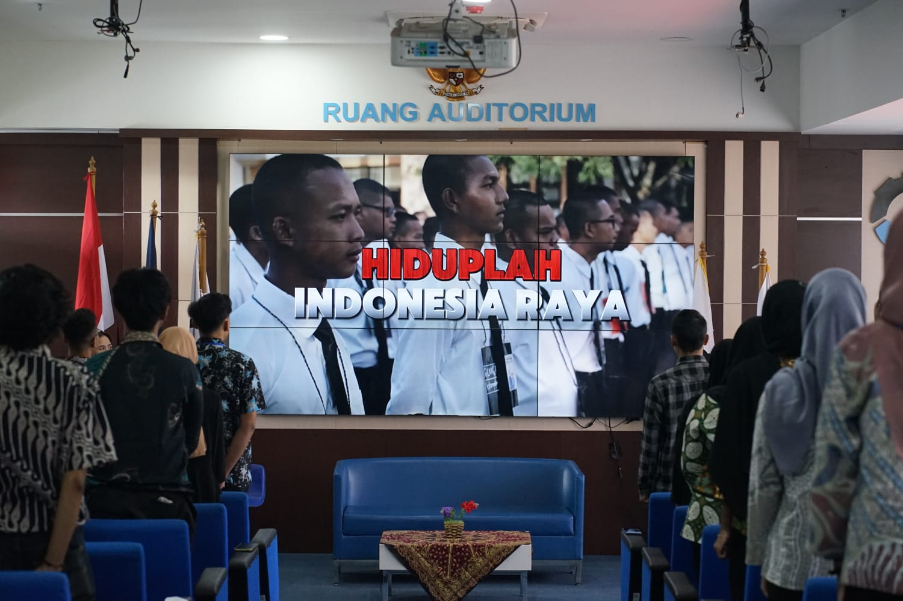
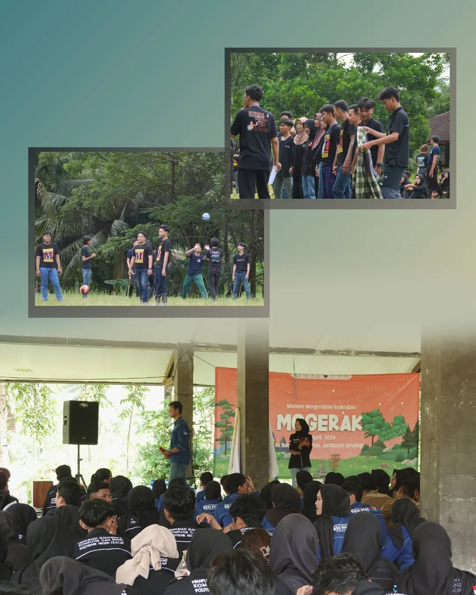

First Gathering BEM

First Gathering ini dilakukan dalam rangka pertemuan besar pertama antara staff muda dengan staff lama BEM PNC. Kegiatan ini rutin dilakukan setiap menjelang masa peralihan. Disinilah para staff muda mulai diberikan gambaran kerja dari BEM oleh staff-staff lamanya sekaligus pemaparan tupoksi dari masing-masing departemen.
Sidang AD/ART

Sidang AD/ART adalah sidang internal yang membahas tentang peraturan anggaran dasar rumah tangga Badan Eksekutif Mahasiswa. Musyawarah ini rutin dilakukan ketika awal masa periode.
Training Internal BEM PNC

Training Internal adalah kegiatan pelatihan yang bertujuan untuk mengasah mindset kerja dan menyatukan visi dalam berorganisasi. Rangkaian kegiatan ini dimulai dengan talkshow dan disusul pemaparan dari masing-masing departemen. Kegiatan ini penting karena menyangkut masa depan dari internal organisasi itu sendiri.
Duta Kampus

Duta Kampus adalah kegiatan rutin dari departemen dalam kampus yang bertujuan memilih mahasiswa sebagai media promosi dan branding kampus. Kegiatan ini diikuti oleh seluruh mahasiswa Politeknik Negeri Cilacap dan didukung penuh oleh pihak kampus.
Mogerak

Mogerak adalah program kerja untuk mengeratkan tali persaudaraan antar ormawa di Politeknik Negeri Cilacap. Kegiatan ini mirip dengan LDK, namun pesertanya adalah seluruh ormawa PNC.